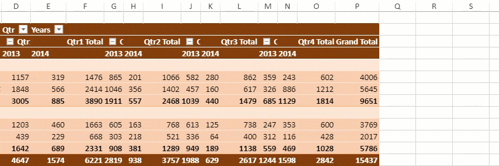
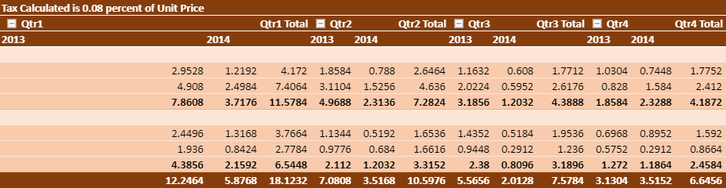
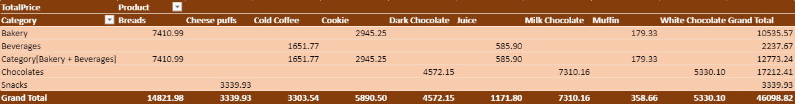
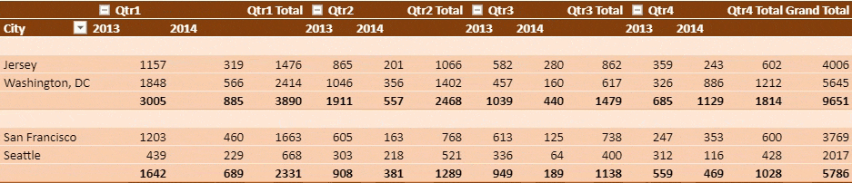
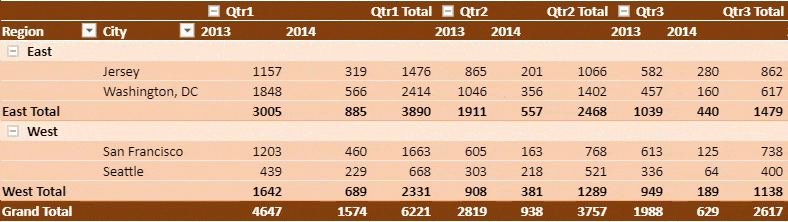
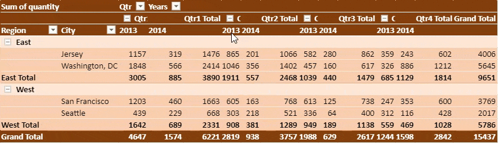
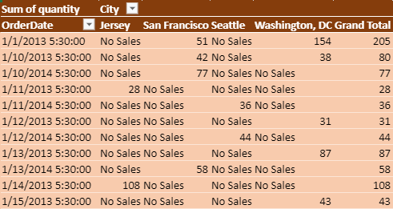
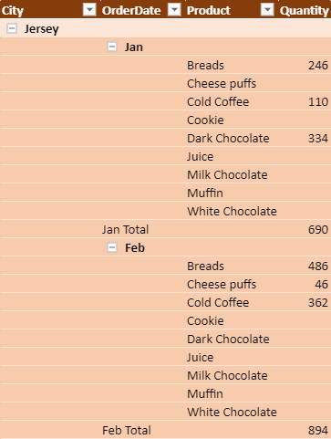
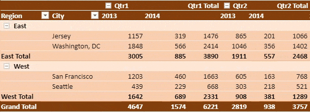
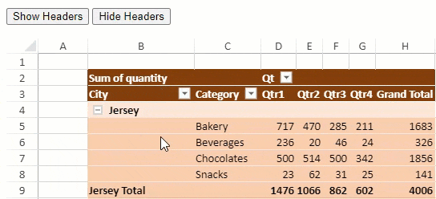

You can modify the settings of a pivot table to make it more comprehensible.
Auto Fit Column
The autoFitColumn method can be used to automatically fit pivot table columns according to the data. The below GIF demonstrates auto fit columns in a pivot table.

The following example code shows how to auto fit columns in a pivot table.
| JavaScript |
Copy Code
|
|---|---|
// Auto fit columns
myPivotTable.autoFitColumn();
|
|
Calculated Fields
You can add custom fields into the value field area of a pivot table which calculates values using formulas. You can use constants or refer to other fields of the pivot table in the formula.
The calculated field can be added using addCalcField method. Additionally, you can fetch and remove calculated field information using getCalcFields and removeCalcField methods respectively.
In the below image, a calculated field "Tax" is added in a pivot table.

The following example code shows how to add, fetch and remove a calculated field in a pivot table.
| JavaScript |
Copy Code
|
|---|---|
// Add Calculated Field "Tax" which is equal to 0.08 % of UnitPrice field // UnitPrice is one of PivotTable's measure field myPivotTable.addCalcField("Tax", "=UnitPrice*0.08"); myPivotTable.add("Tax", "Tax Calculated is 0.08 percent of Unit Price", GC.Spread.Pivot.PivotTableFieldType.valueField, GC.Pivot.SubtotalType.sum); // get calculated field calcFieldsInfo = myPivotTable.getCalcFields(); // add Calculated Field's name in new sheet for (var i = 0; i < calcFieldsInfo.length; i++) { calcFieldSheet.setValue(i + 1, 0, calcFieldsInfo[i].fieldName); calcField = calcFieldsInfo[i].fieldName; calcFieldSheet.setValue(i + 1, 1, calcFieldsInfo[i].formula); } // remove calculated field myPivotTable.removeCalcField(calcField); |
|
Calculated Item
You can add a calculated item into the row or column field area where it calculates the particular item in the Pivot table using specified formulas. You can use constants or refer to other fields of the pivot table in the formula.
The calculated item can be added using the addCalcItem method. Additionally, you can fetch, update and remove calculated items using getCalcItems, updateCalcItem, and removeCalcItem methods respectively.
Behavior of Calculated Items
- Calculated items cannot be implemented on multiple fields in a pivot table report area.
- The formula of a calculated item can refer to the data of a pivot table and not to the data of the worksheet.
- SpreadJS can add a calculated item to the field being grouped, and add the base information to the group field.
- If you have a number group field or a date group field, only a selection group can add a calculated item.
- All references to the pivot table must follow the format "SourceFieldName[itemName]".
- The "Calculation Type" of all value fields in a pivot report can only be one of the following: TypeSum, Count, Max, Min, Product, Count Numbers.
- A field in a calculated item cannot exist in the Filter area of a pivot report.
- SpreadJS allows us to set whether the value of the calcItem should be aggregated into subtotal.
In the below image, a calculated item "Category[Bakery+Beverages]" is added in a pivot table.

The following example code shows how to add, update and remove a calculated field in a pivot table.
| JavaScript |
Copy Code
|
|---|---|
// Add Calculated Item "Category[Bakery+Beverages]" which is equal to "Category[Bakery] + Category[Beverages]" function addCalcItem(myPivotTable) { myPivotTable.addCalcItem("Category", "Category[Bakery + Beverages]", "=Category[Bakery] + Category[Beverages]"); myPivotTable.autoFitColumn(); return myPivotTable; } // Update calculated item function updateCalcItem(myPivotTable) { myPivotTable.updateCalcItem("Category", "Category[Bakery + Beverages]", "=Category[Bakery] - Category[Beverages]", 1); myPivotTable.options.calcItemAggregation = GC.Spread.Pivot.CalcItemAggregation.include; myPivotTable.autoFitColumn(); return myPivotTable; } // Remove calculated item function deleteCalcItem(myPivotTable) { myPivotTable.removeCalcItem("Category", "Category[Bakery + Beverages]"); myPivotTable.autoFitColumn(); return myPivotTable; } |
|
Conditional Rule
You can apply conditional rules on a pivot area using the addConditionalRule method. Additionally, you can fetch or remove any existing conditional rules using the getConditionalRules and removeConditionalRule methods respectively. The conditional rules work as expected irrespective of the changes to the pivot table layout.
The following image shows color formatting conditional rule in value cells.

The following example code shows how to apply conditional rule in a pivot table.
| JavaScript |
Copy Code
|
|---|---|
// Add conditional rule myPivotTable.addConditionalRule([{ dataOnly: true, references: [{ fieldName: "City", items: ["Seattle"] }] }], new GC.Spread.Sheets.ConditionalFormatting.ScaleRule(GC.Spread.Sheets.ConditionalFormatting.RuleType.threeScaleRule, 1 /* LowestValue */, 0, "lightblue", 0 /* Number */, 500, "yellow", 2 /* HighestValue */, 2000, "green")); |
|
Merge and Center Cells With Labels
You can merge and center justify the cells with labels using the mergeItem option. This option accepts boolean value and works according to the defined layout of a pivot table as described below:
| Options | Compact Form | Outline Form | Tabular Form |
|---|---|---|---|
| Merge | Only Column header | Only Column header | Both column and row header |
| Center | Only Column header | Both column and row header | Both column and row header |
In the below GIF, the cells with labels are merged and centered using the mergeItem option.

The following example code shows how to merge and center justify the cells with labels in a pivot table.
| JavaScript |
Copy Code
|
|---|---|
// Merge and center labeled cells myPivotTable.options.mergeItem = true; |
|
Pivot Table ToolTip
You can enable tooltips in a pivot table to understand the additional meaning of data. The tooltip data appears when the mouse is hovered over pivot data. However, the tooltips are not displayed if there is no clear information in value field. You can use the showToolTip option to show tooltips in the row/column header area, data area, and subtotal/grandTotal area.
The below image shows tooltips when the mouse is hovered over pivot data.

The following example code shows how to enable tooltips in a pivot table.
| JavaScript |
Copy Code
|
|---|---|
// Show tooltip in pivot table myPivotTable.options.showToolTip = true; |
|
Pivot Table Serialize and Deserialize
You can serialize and save pivot table data using serialize method and restore the serialized pivot table data to an existing pivot table using the deserialize method. Serialization supports the following pivot table data: Fields, Options, Filter, Sort, Layout, PivotTable Position and Theme.
The following example code serializes and saves pivot table data, prints the serialization information and restores the data to an existing pivot table.
| JavaScript |
Copy Code
|
|---|---|
// Using serialize method to save pivot table data serialization = myPivotTable.serialize(); // Printing serialization info info = JSON.stringify(serialization, null, 2); console.log(info); // Using deserialize method to restore data myPivotTable.deserialize(serialization); |
|
Show Empty Value As
SpreadJS provides the following options to choose whether to display any custom value in case an empty value exists in the pivot table data source.
- showMissing indicates whether any value should be shown when the actual value is empty. It accepts boolean value and is true by default.
- missingCaption indicates what value should be shown when the actual value is empty. It accepts string and number values and is empty by default.
The below image shows empty values as 'No Sales' in a pivot table.

The following example code shows how to display a string value in place of empty value.
| JavaScript |
Copy Code
|
|---|---|
// Display custom value in empty cell myPivotTable.options.showMissing = true; myPivotTable.options.missingCaption = "No Sales"; |
|
Show Items with No Data
You can display items with no data in a pivot table using the showNoData method and choose whether to show blank cells in a field. This method accepts parameters such as field name and a boolean value for whether the items should be displayed.
This setting helps the user to compare the items of a data source by managing the item’s visibility in the pivot table. The visibility of data is not dependent on whether it holds any value or not.
The following image displays each store’s data including the periods with no sales.

The following example code shows how to display items with no data.
| JavaScript |
Copy Code
|
|---|---|
function initPivotTable(sheet) { myPivotTable = sheet.pivotTables.add("myPivotTable", "tableSales", 1, 1, GC.Spread.Pivot.PivotTableLayoutType.outline, GC.Spread.Pivot.PivotTableThemes.dark3); myPivotTable.suspendLayout(); myPivotTable.add("City", "City", GC.Spread.Pivot.PivotTableFieldType.rowField); myPivotTable.add("OrderDate", "OrderDate", GC.Spread.Pivot.PivotTableFieldType.rowField); myPivotTable.add("Product", "Product", GC.Spread.Pivot.PivotTableFieldType.rowField); let groupInfo = { originFieldName: "OrderDate", dateGroups: [{ by: GC.Pivot.DateGroupType.months }] }; myPivotTable.group(groupInfo); myPivotTable.add("Quantity", "Quantity", GC.Spread.Pivot.PivotTableFieldType.valueField, GC.Pivot.SubtotalType.sum); // Set showNoData to true for displaying products which doesn't have any quantity myPivotTable.showNoData("Product", true); myPivotTable.resumeLayout(); myPivotTable.autoFitColumn(); return myPivotTable; } |
|
Pivot Table Show Data As
You can show the pivot table data as different types of calculation values using showDataAs method. This method accepts field name and IPivotShowDataAsInfo object properties. The value fields can be set to different calculations using PivotShowDataAs enumeration.
In the below GIF, the pivot table shows running total for "Years" field.

The following example code shows how to display the running total value for Years.
| JavaScript |
Copy Code
|
|---|---|
// Using showDataAs method myPivotTable.showDataAs("Sum of quantity", { showDataAs: GC.Pivot.PivotShowDataAs.runTotal, baseFieldName: "Years" }); |
|
Show or Hide Headers
You can set whether a Pivot Table displays the names of the fields in the row and column directions or not by using the showHeaders property. It is set to true by default.
In the below GIF, the pivot table shows and hides the row and column headers.

The following example code shows how to hide headers.
| JavaScript |
Copy Code
|
|---|---|
// set showHeader option to False to hide headers of pivot table pt.options.showHeaders = false; |
|
JSON I/O without Style
You can choose to keep or drop pivot table style while importing or exporting a spreadsheet to JSON format. The ignorestyle parameter of toJSON and fromJSON methods when set to true, drops the pivot cache and pivot table while keeping the pivot table values.
The below image shows a pivot table without style when imported from a JSON file.

The following example code shows how to import or export a json file without style.
| JavaScript |
Copy Code
|
|---|---|
function bindExcelIOEvent(spread) { // import ssjson file when IgnoreStyle parameter is set to true var openButton = document.getElementById('openButton'); openButton.addEventListener('click', function () { var file = document.getElementById("importFileName").files[0]; var fileName = file.name; var suffix = fileName.substr(fileName.lastIndexOf('.')); if (suffix === '.ssjson' || suffix === 'json') { var reader = new FileReader(); reader.onload = function () { var spreadJson = JSON.parse(this.result); spread.fromJSON(spreadJson, { ignoreStyle: true }); }; reader.readAsText(file); } }); // export ssjson file when IgnoreStyle option is set to true var saveSSJSONButton = document.getElementById('saveSSJSONButton'); saveSSJSONButton.addEventListener('click', function () { var fileName = "ExportedFile"; var index = fileName.lastIndexOf('.'); if (index >= 0) { fileName = fileName.substr(0, index) + '.ssjson'; } else { fileName += '.ssjson'; } var json = spread.toJSON({ includeBindingSource: true, ignoreStyle: true }), text = JSON.stringify(json); saveAs(new Blob([text], { type: "text/plain;charset=utf-8" }), fileName); }); } |
|